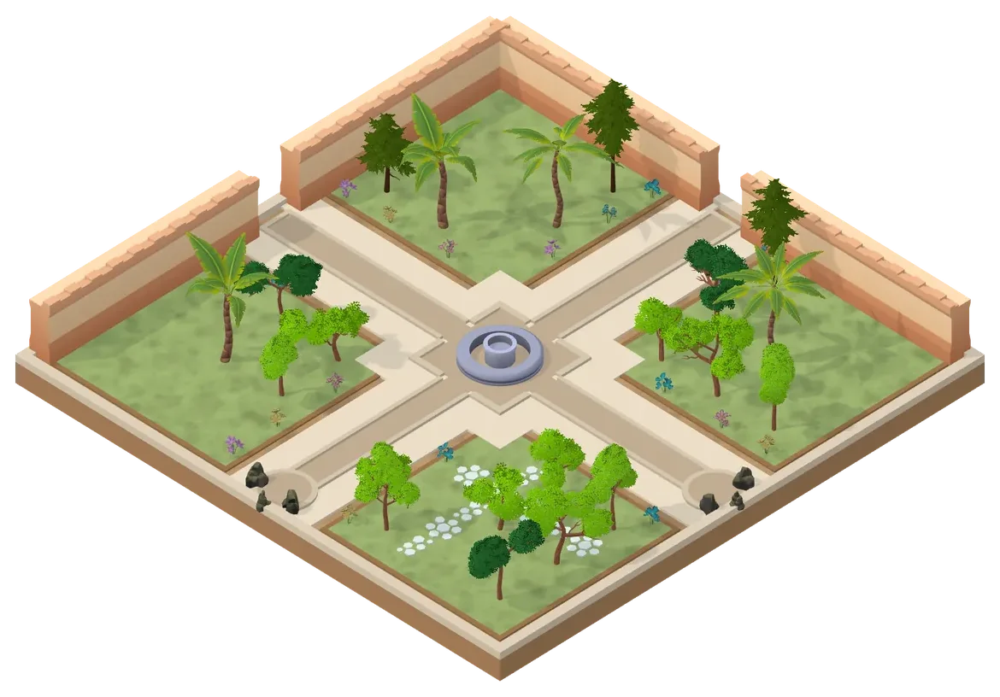
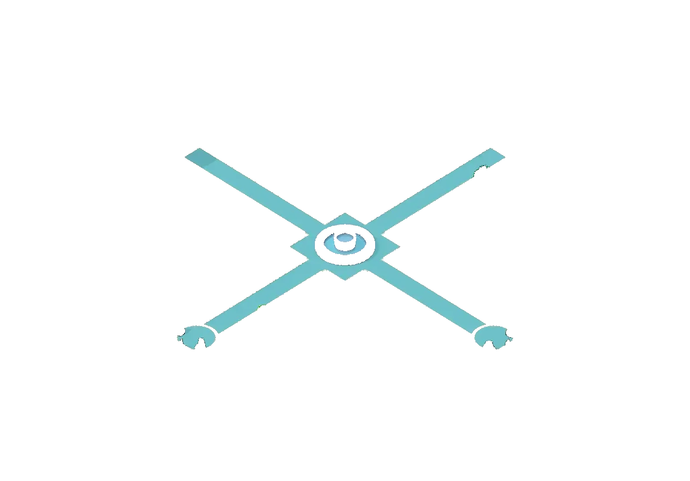
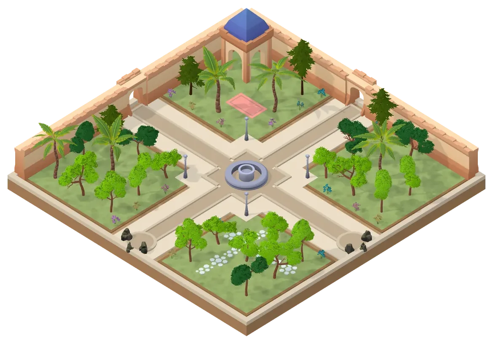
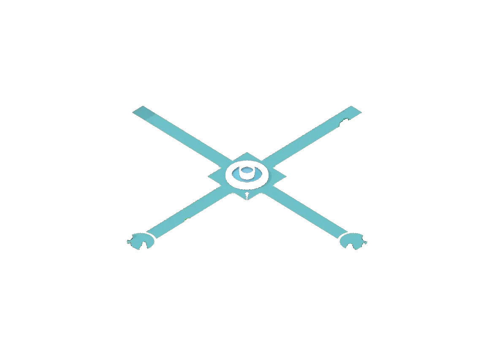
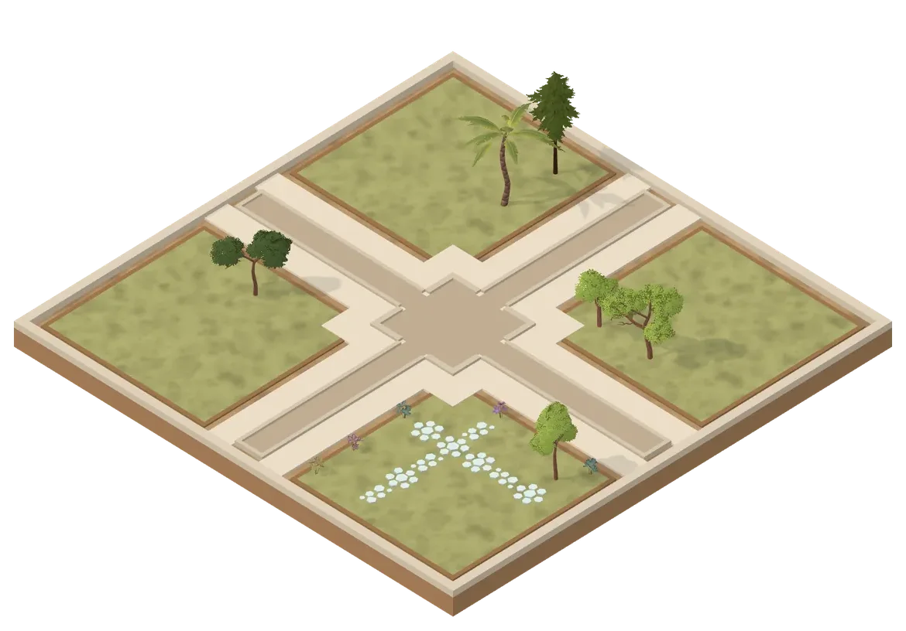
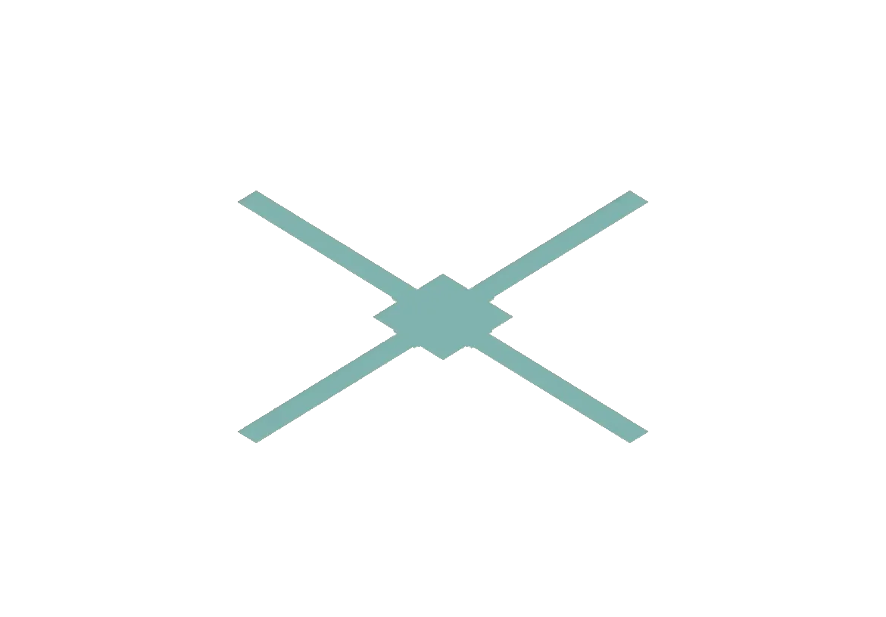
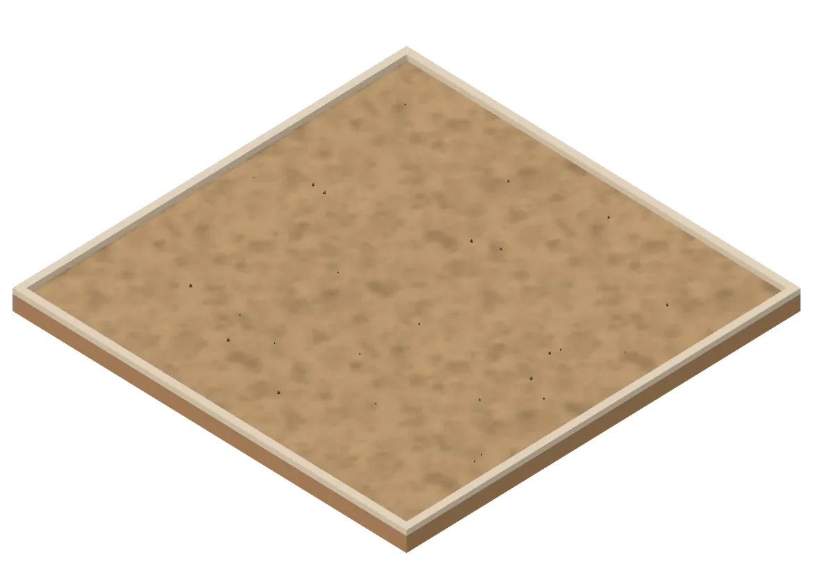

إِذۡ أَوَى ٱلۡفِتۡيَةُ إِلَى ٱلۡكَهۡفِ فَقَالُواْ رَبَّنَآ ءَاتِنَا مِن لَّدُنكَ رَحۡمَةٗ وَهَيِّئۡ لَنَا مِنۡ أَمۡرِنَا رَشَدٗا






C’est toi qui décides. Tu pourras le changer quand tu veux.
Pour que ton jardin ne manque jamais d’eau.

Crée un compte pour le retrouver sur tous tes appareils.